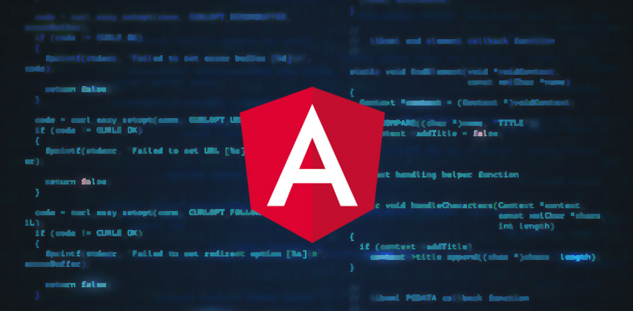

¿Qué es Angular? - Concepto
Angular es una plataforma de desarrollo, construida sobre TypeScript. Es un framework basado en componentes para crear aplicaciones web escalables. Una colección de bibliotecas bien integradas que cubren una amplia variedad de características, que incluyen enrutamiento, administración de formularios, comunicación cliente-servidor y más. Un conjunto de herramientas para desarrolladores que permiten desarrollar, compilar, probar y actualizar el código fuente de la aplicación.

Con Angular, estás aprovechando una plataforma que puede escalar desde proyectos de un solo desarrollador hasta aplicaciones de nivel empresarial. Angular está diseñado para que la actualización sea lo más sencilla posible, y así aprovechar los últimos desarrollos con un mínimo de esfuerzo. Lo mejor de todo es que el ecosistema Angular consta de un grupo diverso de más de 1,7 millones de desarrolladores, autores de bibliotecas y creadores de contenido.
Oficial de AngularCaracterísticas
--DOM (Document Object Model) trata un documento XML o HTML como una estructura de árbol en la que cada nodo representa una parte del documento..
--TypeScript define un conjunto de tipos de JavaScript, lo que ayuda a los usuarios a escribir código JavaScript que es más fácil de entender.
--El enlace de datos (data binding) es un proceso que permite a los usuarios manipular elementos de la página web a través de un navegador web. Emplea HTML dinámico y no requiere secuencias de comandos ni programación complejas.
--Angular usa el Framework de prueba Jasmine. Jasmine proporciona múltiples funcionalidades para escribir diferentes tipos de casos de prueba. .
Proceso de instalación
Para instalar Angular vamos a utilizar el mismo terminal que hemos utilizado previamente, en el que ejecutaremos el npm install -g @angular/cli. De esta forma instalaremos Angular de forma global, independientemente de la carpeta en la que nos encontremos, y, también se instalará la última versión estable que exista.
- Paso 1: Ejecutamos el comando ng new nombre-proyecto en el terminal, con el nombre que queramos utilizar
- Paso 2: Durante el proceso de instalación, el asistente del CLI de Angular irá realizando una serie de preguntas para ofrecernos varias opciones. Lo primero que nos preguntará será si queremos autogenerar las rutas, a lo que responderemos afirmativamente. Después nos preguntará qué opción queremos elegir para el CSS, y aquí seleccionaremos SCSS.
- Paso 3: Seguidamente comienza el proceso de creación de nuestro proyecto, que llevará unos minutos hasta que se complete. Una vez finalizado lo lanzamos ejecutando en la consola el comando ng serve -o, pero lo haremos siempre desde la carpeta de nuestro proyecto, por lo que previamente accedemos a ella con el comando cd angular8.
- Paso 4: Tras esperar unos segundos ya tendríamos el proyecto ejecutándose, y se abre el navegador automáticamente con el puerto correspondiente, ya que habíamos utilizado la opción -o en la ejecución.
Ver más
Video de proceso de instalació